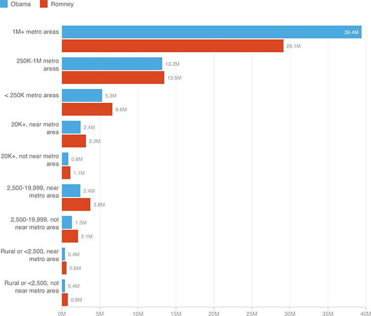

Urban Areas Won The Election For Obama In 2012
The USDA categorizes counties on a nine-point urban-rural continuum, from cities with populations of more than 1 million to rural, sparsely populated areas (read about them here). Obama only won the most urban of U.S. counties in 2012. But so many people live in those most-urban areas that it boosted him to a win.
